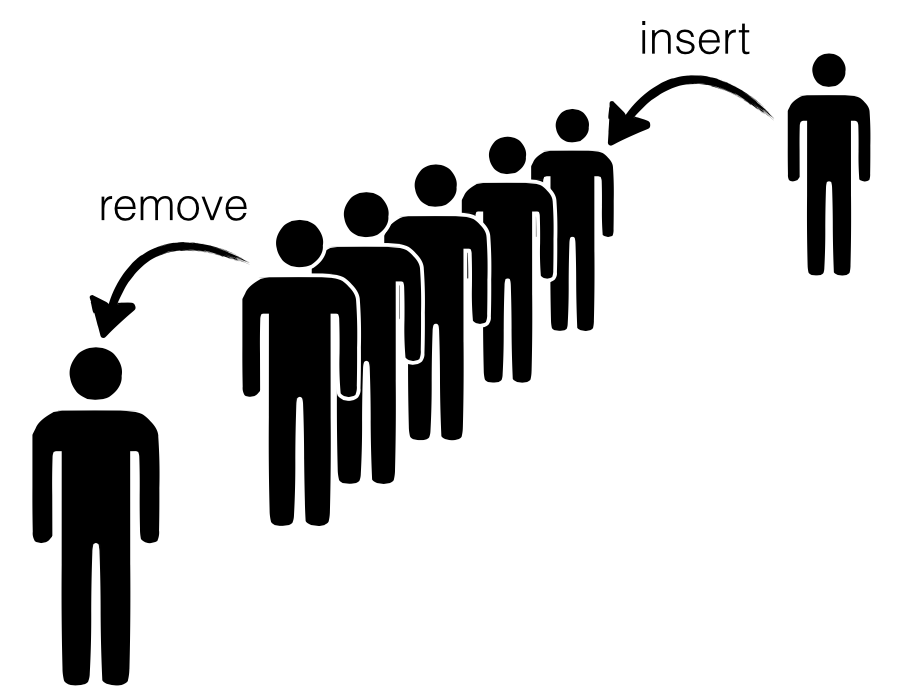
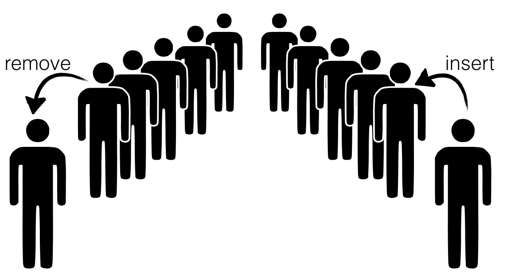

Okasaki's Lazy Queues
The "Hello World!" example for fancy type systems is probably the sized vector
or list append function ("The output has size equal to the sum of the
inputs!"). One the one hand, it is perfect: simple enough to explain without
pages of code, yet complex enough to show off whats cool about dependency. On
the other hand, like the sweater I'm sporting right now, it's a bit well-worn and
worse, was never wholly convincing ("Why do I care what the size of the
output list is anyway?")
Recently, I came across a nice example that is almost as simple, but is also well motivated: Okasaki's beautiful Lazy Amortized Queues. This structure leans heavily on an invariant to provide fast insertion and deletion. Let's see how to enforce that invariant with LiquidHaskell.
30: {-@ LIQUID "--no-termination" @-} 31: {-@ LIQUID "--total" @-} 32: {-@ LIQUID "--maxparams=3" @-} 33: 34: module LazyQueue (Queue, insert, remove, emp) where 35: 36: import Prelude hiding (length) 37: 38: -- | Size function actually returns the size: (Duh!) 39: 40: {-@ size :: q:SList a -> {v:Nat | v = size q} @-} 41: data Queue a = Q { forall a. (LazyQueue.Queue a) -> (LazyQueue.SList a)front :: SList a 42: , forall a. (LazyQueue.Queue a) -> (LazyQueue.SList a)back :: SList a 43: } 44: 45: -- Source: Okasaki, JFP 1995 46: -- http://www.westpoint.edu/eecs/SiteAssets/SitePages/Faculty%20Publication%20Documents/Okasaki/jfp95queue.pdf 47:
Queues¶
A queue is a structure into which we can insert and remove data
such that the order in which the data is removed is the same as the order in which
it was inserted.

To implement a queue efficiently one needs to have rapid access to both
the "head" as well as the "tail" because we remove elements from former
and insert elements into the latter. This is quite straightforward with
explicit pointers and mutation -- one uses an old school linked list and
maintains pointers to the head and the tail. But can we implement the
structure efficiently without having stoop so low?
Queues = Pair of Lists¶
Almost two decades ago, Chris Okasaki came up with a very cunning way
to implement queues using a pair of lists -- let's call them front
and back which represent the corresponding parts of the Queue.
- To
insertelements, we just cons them onto thebacklist, - To
removeelements, we just un-cons them from thefrontlist.

The catch is that we need to shunt elements from the back to the front every so often, e.g. when
- a
removecall is triggered, and - the
frontlist is empty,
We can transfer the elements from the back to the front.

Okasaki observed that every element is only moved once from the
front to the back; hence, the time for insert and lookup could be
O(1) when amortized over all the operations. Awesome, right?!
Almost. Some set of unlucky remove calls (which occur when
the front is empty) are stuck paying the bill. They have a
rather high latency up to O(n) where n is the total number
of operations. Oops.
Queue = Balanced Lazy Lists¶
This is where Okasaki's beautiful insights kick in. Okasaki observed that all we need to do is to enforce a simple invariant:
Invariant: Size of front >= Size of back
Now, if the lists are lazy i.e. only constructed as the head
value is demanded, then a single remove needs only a tiny O(log n)
in the worst case, and so no single remove is stuck paying the bill.
Let's see how to represent these Queues and ensure the crucial invariant(s) with LiquidHaskell. What we need are the following ingredients:
-
A type for
Lists, and a way to track theirsize, -
A type for
Queues which encodes the balance invariant -- ``front longer than back", -
A way to implement the
insert,removeandtransferoperations.
Sized Lists¶
The first part is super easy. Let's define a type:
127: data SList a = SL { forall a. x1:(LazyQueue.SList a) -> {v : GHC.Types.Int | v == size x1 && v >= 0}size :: Int, forall a. (LazyQueue.SList a) -> [a]elems :: [a]}
We have a special field that saves the size because otherwise, we
have a linear time computation that wrecks Okasaki's careful
analysis. (Actually, he presents a variant which does not require
saving the size as well, but that's for another day.)
But how can we be sure that size is indeed the real size of elems?
Let's write a function to measure the real size:
140: {-@ measure realSize @-} 141: realSize :: [a] -> Int 142: forall a. x1:[a] -> {VV : GHC.Types.Int | VV == realSize x1}realSize [] = x1:GHC.Prim.Int# -> {v : GHC.Types.Int | v == (x1 : int)}0 143: realSize (_:xs) = {v : GHC.Types.Int | v == (1 : int)}1 x1:GHC.Types.Int -> x2:GHC.Types.Int -> {v : GHC.Types.Int | v == x1 + x2}+ forall a. x1:[a] -> {VV : GHC.Types.Int | VV == realSize x1}realSize {v : [a] | v == xs && len v >= 0}xs
and now, we can simply specify a refined type for SList that ensures
that the real size is saved in the size field:
150: {-@ data SList a = SL { 151: size :: Nat 152: , elems :: {v:[a] | realSize v = size} 153: } 154: @-}
As a sanity check, consider this:
160: {VV : (LazyQueue.SList {VV : [GHC.Types.Char] | len VV >= 0}) | size VV > 0}okList = x1:{v : GHC.Types.Int | v >= 0} -> x2:{v : [{v : [GHC.Types.Char] | len v >= 0}] | realSize v == x1} -> {v : (LazyQueue.SList {v : [GHC.Types.Char] | len v >= 0}) | elems v == x2 && size v == x1}SL {v : GHC.Types.Int | v == (1 : int)}1 {v : [{v : [GHC.Types.Char] | len v >= 0}]<\_ VV -> false> | null v <=> false && len v >= 0}[{v : [GHC.Types.Char] | len v >= 0}"cat"] -- accepted 161: 162: forall a. (LazyQueue.SList a)badList = x1:{v : GHC.Types.Int | v >= 0} -> x2:{v : [a] | realSize v == x1} -> {v : (LazyQueue.SList a) | elems v == x2 && size v == x1}SL {v : GHC.Types.Int | v == (1 : int)}1 {v : [a] | null v <=> true && realSize v == 0 && len v == 0 && len v >= 0}[] -- rejected
It is helpful to define a few aliases for SLists of a size N and
non-empty SLists:
169: -- | SList of size N 170: 171: {-@ type SListN a N = {v:SList a | size v = N} @-} 172: 173: -- | Non-Empty SLists: 174: 175: {-@ type NEList a = {v:SList a | size v > 0} @-} 176:
Finally, we can define a basic API for SList.
To Construct lists, we use nil and cons:
184: {-@ nil :: SListN a 0 @-} 185: forall a. {v : (LazyQueue.SList a) | size v == 0}nil = x1:{v : GHC.Types.Int | v >= 0} -> x2:{v : [a] | realSize v == x1} -> {v : (LazyQueue.SList a) | elems v == x2 && size v == x1}SL {v : GHC.Types.Int | v == (0 : int)}0 {v : [a] | null v <=> true && realSize v == 0 && len v == 0 && len v >= 0}[] 186: 187: {-@ cons :: a -> xs:SList a -> SListN a {size xs + 1} @-} 188: forall a. a -> x2:(LazyQueue.SList a) -> {v : (LazyQueue.SList a) | size v == size x2 + 1}cons ax (SL n xs) = x1:{v : GHC.Types.Int | v >= 0} -> x2:{v : [a] | realSize v == x1} -> {v : (LazyQueue.SList a) | elems v == x2 && size v == x1}SL ({v : GHC.Types.Int | v == n && v >= 0}nx1:GHC.Types.Int -> x2:GHC.Types.Int -> {v : GHC.Types.Int | v == x1 + x2}+{v : GHC.Types.Int | v == (1 : int)}1) ({VV : a | VV == x}xx1:a -> x2:[a] -> {v : [a] | null v <=> false && xListSelector v == x1 && realSize v == 1 + realSize x2 && xsListSelector v == x2 && len v == 1 + len x2}:{v : [a] | v == xs && realSize v == n && len v >= 0}xs)
To Destruct lists, we have hd and tl.
194: {-@ tl :: xs:NEList a -> SListN a {size xs - 1} @-} 195: forall a. x1:{v : (LazyQueue.SList a) | size v > 0} -> {v : (LazyQueue.SList a) | size v == size x1 - 1}tl (SL n (_:xs)) = x1:{v : GHC.Types.Int | v >= 0} -> x2:{v : [a] | realSize v == x1} -> {v : (LazyQueue.SList a) | elems v == x2 && size v == x1}SL ({v : GHC.Types.Int | v == n && v >= 0}nx1:GHC.Types.Int -> x2:GHC.Types.Int -> {v : GHC.Types.Int | v == x1 - x2}-{v : GHC.Types.Int | v == (1 : int)}1) {v : [a] | v == xs && len v >= 0}xs 196: 197: {-@ hd :: xs:NEList a -> a @-} 198: forall a. {v : (LazyQueue.SList a) | size v > 0} -> ahd (SL _ (x:_)) = {VV : a | VV == x}x
Don't worry, they are perfectly safe as LiquidHaskell will make
sure we only call these operators on non-empty SLists. For example,
205: {v : [GHC.Types.Char] | len v >= 0}okHd = {v : (LazyQueue.SList {v : [GHC.Types.Char] | len v >= 0}) | size v > 0} -> {v : [GHC.Types.Char] | len v >= 0}hd {v : (LazyQueue.SList {v : [GHC.Types.Char] | len v >= 0}) | v == LazyQueue.okList && size v > 0}okList -- accepted 206: 207: {VV : [GHC.Types.Char] | len VV >= 0}badHd = {v : (LazyQueue.SList {v : [GHC.Types.Char] | len v >= 0}) | size v > 0} -> {v : [GHC.Types.Char] | len v >= 0}hd (x1:{v : (LazyQueue.SList {v : [GHC.Types.Char] | len v >= 0}) | size v > 0} -> {v : (LazyQueue.SList {v : [GHC.Types.Char] | len v >= 0}) | size v == size x1 - 1}tl {v : (LazyQueue.SList {v : [GHC.Types.Char] | len v >= 0}) | v == LazyQueue.okList && size v > 0}okList) -- rejected
Queue Type¶
Now, it is quite straightforward to define the Queue type, as a pair of lists,
front and back, such that the latter is always smaller than the former:
218: {-@ data Queue a = Q { 219: front :: SList a 220: , back :: SListLE a (size front) 221: } 222: @-}
Where the alias SListLE a L corresponds to lists with less than N elements:
228: {-@ type SListLE a N = {v:SList a | size v <= N} @-}
As a quick check, notice that we cannot represent illegal Queues:
234: {VV : (LazyQueue.Queue [GHC.Types.Char]) | 0 < qsize VV}okQ = x1:(LazyQueue.SList [GHC.Types.Char]) -> x2:{v : (LazyQueue.SList [GHC.Types.Char]) | size v <= size x1} -> {v : (LazyQueue.Queue [GHC.Types.Char]) | qsize v == size x1 + size x2 && front v == x1 && back v == x2}Q {v : (LazyQueue.SList {v : [GHC.Types.Char] | len v >= 0}) | v == LazyQueue.okList && size v > 0}okList {v : (LazyQueue.SList [GHC.Types.Char]) | size v == 0}nil -- accepted, |front| > |back| 235: 236: {VV : (LazyQueue.Queue [GHC.Types.Char]) | 0 < qsize VV}badQ = x1:(LazyQueue.SList [GHC.Types.Char]) -> x2:{v : (LazyQueue.SList [GHC.Types.Char]) | size v <= size x1} -> {v : (LazyQueue.Queue [GHC.Types.Char]) | qsize v == size x1 + size x2 && front v == x1 && back v == x2}Q {v : (LazyQueue.SList [GHC.Types.Char]) | size v == 0}nil {v : (LazyQueue.SList {v : [GHC.Types.Char] | len v >= 0}) | v == LazyQueue.okList && size v > 0}okList -- rejected, |front| < |back|
To Measure Queue Size let us define a function
242: {-@ measure qsize @-} 243: qsize :: Queue a -> Int 244: forall a. x1:(LazyQueue.Queue a) -> {VV : GHC.Types.Int | VV == qsize x1}qsize (Q l r) = x1:(LazyQueue.SList a) -> {v : GHC.Types.Int | v == size x1 && v >= 0}size {v : (LazyQueue.SList a) | v == l}l x1:GHC.Types.Int -> x2:GHC.Types.Int -> {v : GHC.Types.Int | v == x1 + x2}+ x1:(LazyQueue.SList a) -> {v : GHC.Types.Int | v == size x1 && v >= 0}size {v : (LazyQueue.SList a) | v == r && size v <= size l}r
This will prove helpful to define Queues of a given size N and
non-empty Queues (from which values can be safely removed.)
251: {-@ type QueueN a N = {v:Queue a | N = qsize v} @-} 252: {-@ type NEQueue a = {v:Queue a | 0 < qsize v} @-}
Queue Operations¶
Almost there! Now all that remains is to define the Queue API. The
code below is more or less identical to Okasaki's (I prefer front
and back to his left and right.)
The Empty Queue is simply one where both front and back are nil.
267: {-@ emp :: QueueN a 0 @-} 268: forall a. {v : (LazyQueue.Queue a) | 0 == qsize v}emp = x1:(LazyQueue.SList a) -> x2:{v : (LazyQueue.SList a) | size v <= size x1} -> {v : (LazyQueue.Queue a) | qsize v == size x1 + size x2 && front v == x1 && back v == x2}Q {v : (LazyQueue.SList a) | size v == 0}nil {v : (LazyQueue.SList a) | size v == 0}nil
To Insert an element we just cons it to the back list, and call
the smart constructor makeq to ensure that the balance invariant holds:
275: {-@ insert :: a -> q:Queue a -> QueueN a {qsize q + 1} @-} 276: forall a. a -> x2:(LazyQueue.Queue a) -> {v : (LazyQueue.Queue a) | qsize x2 + 1 == qsize v}insert ae (Q f b) = x1:(LazyQueue.SList a) -> x2:{v : (LazyQueue.SList a) | size v <= size x1 + 1} -> {v : (LazyQueue.Queue a) | size x1 + size v == qsize v}makeq {v : (LazyQueue.SList a) | v == f}f ({VV : a | VV == e}e a -> x2:(LazyQueue.SList a) -> {v : (LazyQueue.SList a) | size v == size v + 1}`cons` {v : (LazyQueue.SList a) | v == b && size v <= size f}b)
To Remove an element we pop it off the front by using hd and tl.
Notice that the remove is only called on non-empty Queues, which together
with the key balance invariant, ensures that the calls to hd and tl are safe.
284: {-@ remove :: q:NEQueue a -> (a, QueueN a {qsize q - 1}) @-} 285: forall a. x1:{v : (LazyQueue.Queue a) | 0 < qsize v} -> (a, {v : (LazyQueue.Queue a) | qsize x1 - 1 == qsize v})remove (Q f b) = forall a b <p2 :: a b -> Prop>. x1:a -> x2:{VV : b<p2 x1> | true} -> {v : (a, b)<\x6 VV -> p2 x6> | fst v == x1 && x_Tuple22 v == x2 && snd v == x2 && x_Tuple21 v == x1}({v : (LazyQueue.SList a) | size v > 0} -> ahd {v : (LazyQueue.SList a) | v == f}f, x1:(LazyQueue.SList a) -> x2:{v : (LazyQueue.SList a) | size v <= size x1 + 1} -> {v : (LazyQueue.Queue a) | size x1 + size v == qsize v}makeq (x1:{v : (LazyQueue.SList a) | size v > 0} -> {v : (LazyQueue.SList a) | size v == size x1 - 1}tl {v : (LazyQueue.SList a) | v == f}f) {v : (LazyQueue.SList a) | v == b && size v <= size f}b)
Aside: Why didn't we (or Okasaki) use a pattern match here?
To Ensure the Invariant we use the smart constructor makeq,
which is where the heavy lifting, such as it is, happens. The
constructor takes two lists, the front f and back b and if they
are balanced, directly returns the Queue, and otherwise transfers
the elements from b over using rotate.
297: {-@ makeq :: f:SList a 298: -> b:SListLE a {size f + 1 } 299: -> QueueN a {size f + size b} 300: @-} 301: forall a. x1:(LazyQueue.SList a) -> x2:{v : (LazyQueue.SList a) | size v <= size x1 + 1} -> {v : (LazyQueue.Queue a) | size x1 + size x2 == qsize v}makeq (LazyQueue.SList a)f {v : (LazyQueue.SList a) | size v <= size f + 1}b 302: | x1:(LazyQueue.SList a) -> {v : GHC.Types.Int | v == size x1 && v >= 0}size {v : (LazyQueue.SList a) | v == b && size v <= size f + 1}b x1:GHC.Types.Int -> x2:GHC.Types.Int -> {v : GHC.Types.Bool | Prop v <=> x1 <= v}<= x1:(LazyQueue.SList a) -> {v : GHC.Types.Int | v == size x1 && v >= 0}size {v : (LazyQueue.SList a) | v == f}f = x1:(LazyQueue.SList a) -> x2:{v : (LazyQueue.SList a) | size v <= size x1} -> {v : (LazyQueue.Queue a) | qsize v == size x1 + size x2 && front v == x1 && back v == x2}Q {v : (LazyQueue.SList a) | v == f}f {v : (LazyQueue.SList a) | v == b && size v <= size f + 1}b 303: | otherwise = x1:(LazyQueue.SList a) -> x2:{v : (LazyQueue.SList a) | size v <= size x1} -> {v : (LazyQueue.Queue a) | qsize v == size x1 + size x2 && front v == x1 && back v == x2}Q (forall a. x1:(LazyQueue.SList a) -> x2:{v : (LazyQueue.SList a) | size v == 1 + size x1} -> x3:(LazyQueue.SList a) -> {v : (LazyQueue.SList a) | size v == size x1 + size x2 + size x3}rot {v : (LazyQueue.SList a) | v == f}f {v : (LazyQueue.SList a) | v == b && size v <= size f + 1}b {v : (LazyQueue.SList a) | size v == 0}nil) {v : (LazyQueue.SList a) | size v == 0}nil
The Rotate function is only called when the back is one larger
than the front (we never let things drift beyond that). It is
arranged so that it the hd is built up fast, before the entire
computation finishes; which, combined with laziness provides the
efficient worst-case guarantee.
313: {-@ rot :: f:SList a 314: -> b:SListN _ {1 + size f} 315: -> a:SList _ 316: -> SListN _ {size f + size b + size a} 317: @-} 318: forall a. x1:(LazyQueue.SList a) -> x2:{v : (LazyQueue.SList a) | size v == 1 + size x1} -> x3:(LazyQueue.SList a) -> {v : (LazyQueue.SList a) | size v == size x1 + size x2 + size x3}rot (LazyQueue.SList a)f {v : (LazyQueue.SList a) | size v == 1 + size f}b (LazyQueue.SList a)a 319: | x1:(LazyQueue.SList a) -> {v : GHC.Types.Int | v == size x1 && v >= 0}size {v : (LazyQueue.SList a) | v == f}f x1:GHC.Types.Int -> x2:GHC.Types.Int -> {v : GHC.Types.Bool | Prop v <=> x1 == v}== {v : GHC.Types.Int | v == (0 : int)}0 = {v : (LazyQueue.SList a) | size v > 0} -> ahd {v : (LazyQueue.SList a) | v == b && size v == 1 + size f}b a -> x2:(LazyQueue.SList a) -> {v : (LazyQueue.SList a) | size v == size v + 1}`cons` {v : (LazyQueue.SList a) | v == a}a 320: | otherwise = {v : (LazyQueue.SList a) | size v > 0} -> ahd {v : (LazyQueue.SList a) | v == f}f a -> x2:(LazyQueue.SList a) -> {v : (LazyQueue.SList a) | size v == size v + 1}`cons` forall a. x1:(LazyQueue.SList a) -> x2:{v : (LazyQueue.SList a) | size v == 1 + size x1} -> x3:(LazyQueue.SList a) -> {v : (LazyQueue.SList a) | size v == size x1 + size x2 + size x3}rot (x1:{v : (LazyQueue.SList a) | size v > 0} -> {v : (LazyQueue.SList a) | size v == size x1 - 1}tl {v : (LazyQueue.SList a) | v == f}f) (x1:{v : (LazyQueue.SList a) | size v > 0} -> {v : (LazyQueue.SList a) | size v == size x1 - 1}tl {v : (LazyQueue.SList a) | v == b && size v == 1 + size f}b) ({v : (LazyQueue.SList a) | size v > 0} -> ahd {v : (LazyQueue.SList a) | v == b && size v == 1 + size f}b a -> x2:(LazyQueue.SList a) -> {v : (LazyQueue.SList a) | size v == size v + 1}`cons` {v : (LazyQueue.SList a) | v == a}a)
Conclusion¶
Well there you have it; Okasaki's beautiful lazy Queue, with the
invariants easily expressed and checked with LiquidHaskell. I find
this example particularly interesting because the refinements express
invariants that are critical for efficiency, and furthermore the code
introspects on the size in order to guarantee the invariants. Plus,
it's just marginally more complicated than append and so, (I hope!)
was easy to follow.